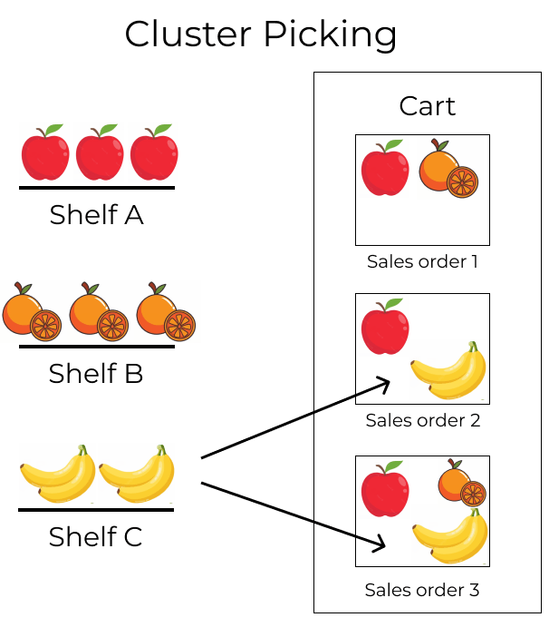
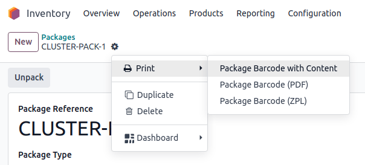

Cluster picking¶
Cluster picking is an advanced order fulfillment approach derived from batch picking.
In this strategy, pickers load a cart with multiple packages, each designated for a specific sales order (SO). Then, the picker travels to each storage location, and places the products directly in the package of the associated order.
This method is most efficient for medium-sized companies, with high order volumes, and relatively few unique products, since the method eliminates the need for sorting products into packages for customers after picking.
However, cluster picking does have some disadvantages. For instance, urgent orders cannot be prioritized, and optimized batches must be manually created beforehand. As a result, the picking process can lead to bottlenecks.
Example
SO 1 calls for one apple and orange
SO 2 calls for one apple and banana
SO 3 calls for one apple, orange, and banana
Apples are stored in Shelf A, oranges in Shelf B, and bananas in Shelf C.
To pick products for three orders at once, the cart is loaded with three empty packages.
Starting at Shelf A, the picker places apples into each package. Next, the picker navigates to Shelf B, and places oranges in the packages designated for SO 1 and SO 3. Finally, the picker pushes the cart to Shelf C, and loads packages for SO 2 and SO 3 with a banana, each.
With the packages for all three SOs packed, the picker pushes the cart to the output location, where the packages are sealed and prepared for shipment.
Configuration¶
To enable cluster picking, begin by navigating to . Under the Operations heading, activate the Packages and Batch Transfers options.

Since batch picking is used to optimize the pick operation in Odoo, the Storage Locations and Multi-Step Routes options, under the Warehouse heading, must also be checked on this settings page.
Storage locations allow products to be stored in specific locations they can be picked from, while multi-step routes enable the picking operation itself.
When finished, click Save.

Packages setup¶
After the Packages feature is enabled, navigate to , and click the New button to create a new package.
On the new package form, the Package Reference is pre-filled with the next available
PACK number in the system. Pack Date is automatically set to the creation date of the
form.
Set the Package Use field to Reusable Box.
See also
Example
A package intended for cluster picking is named CLUSTER-PACK-3 for easy identification. For
this workflow, the products are directly packed using their intended shipping boxes, so
Package Use is set to Disposable Box.
Create cluster batch¶
To see how cluster picking works in Odoo, navigate to the app, and create SOs that will be fulfilled together in the same batch. After confirming an SO, the Delivery smart button becomes visible. Displayed inside the icon is a number representing the amount of steps in the outgoing shipment process.
Example
Begin by creating three SOs for the apples, oranges, and bananas, as shown in the example above.
After confirming the SO, the Delivery smart button displays the number 2,
indicating there are two operations to complete: Pick and Delivery.

With the SOs created, orders now must be grouped into batches. To do so, navigate to the Inventory dashboard and select the operation type card, Delivery Orders or Pick (whichever is the first operation in the delivery flow).
Doing so displays a filtered list of outgoing operations with the Ready status, indicating that all the products in the SO are in stock.
Note
Cluster pick batches can be created for outgoing shipments in one, two, or three steps.
Click the checkbox to the left of the corresponding outgoing operation to add them to the batch. With the desired pickings selected, click the ⚙️ Actions (gear) button, and select the Add to batch option from the resulting drop-down menu.
Example
To create a cluster batch, as shown in the example above, in a warehouse configured with two-step outgoing shipments, the following pick operations are selected:
WH/PICK/00007: linked to SO 88 for one apple and orange.WH/PICK/00008: linked to SO 89 for one apple and banana.WH/PICK/00009: linked to SO 90 for one apple, orange, and banana.

Doing so opens an Add to batch pop-up window, wherein the employee Responsible for the picking can be assigned.
Choose from the two options in the Add to field to either: add to an existing batch transfer, or create a new batch transfer.
To create draft batch pickings to be confirmed at a later date, select the Draft checkbox.
Conclude the process by clicking Confirm.

Process batches¶
To process batches, navigate to . Click on a batch to select it.
In the Detailed Operations tab, products that are to be picked are grouped by location.
Under the Source Package or Destination Package field, enter the package used for the picking.
Note
Use the Source Package field when the picking package is configured as reusable on the package form. This means the products are temporarily placed in a container during picking, before getting transferred to their final shipping box.
Alternatively, use the Destination Package field when the product is directly placed in its disposable shipping box during picking.
Example
Process the cluster batch for the three orders of apples, oranges, and bananas example by assigning each picking to a dedicated package.
At the storage location for apples, WH/Stock/Shelf A, assign the apples in all three pickings
to one of the three disposable packages, CLUSTER-PACK-1, CLUSTER-PACK-2, or CLUSTER-PACK-3.
Record this in Odoo using the Destination Package field in the Detailed Operations tab.

In Barcode¶
To process cluster pickings directly from the Barcode app, select the Batch Transfers button from the Barcode dashboard. Then, select the desired batch.
On the batch transfer screen, the products in the picking are grouped by location, and each line is color-coded to associate products in the same picking together.
Then, follow the prompt to Scan the source location barcode for the storage location of the first product. Then, scan the barcode for the product and package to process the transfer.
Repeat this for all products, and click the Validate button.
Note
To find the package barcode, navigate to , select the desired package, click the ⚙️ (gear) icon at the top of the package form, and select the Print option.
Next, select one of the three print options to generate the package barcode from the Package Reference field.
Example
Begin processing the cluster picking by going to the first storage location, Shelf A, and
scanning the location barcode. Doing so highlights all the
pickings that need products from this particular location.
Scan the barcode for the apple, which highlights the picking (labeled in red) for the product
Apple, for the picking, WH/PICK/00007.
Then, scan the CLUSTER-PACK-1 package barcode, and place the product in the designated package.
Tip
After creating a batch transfer and assigning a package to a picking, Odoo suggests the specified package by displaying the name in italics under the product name, ensuring pickers place products into the correct boxes.